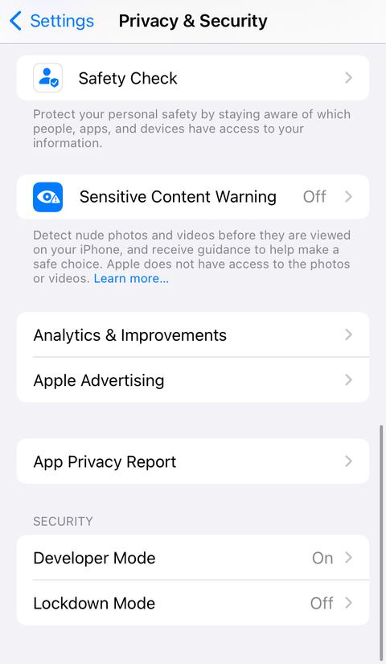
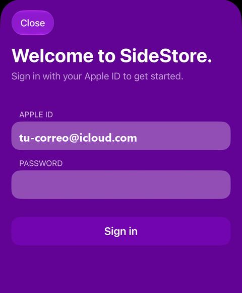
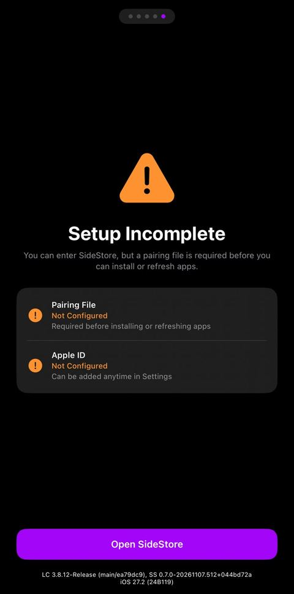
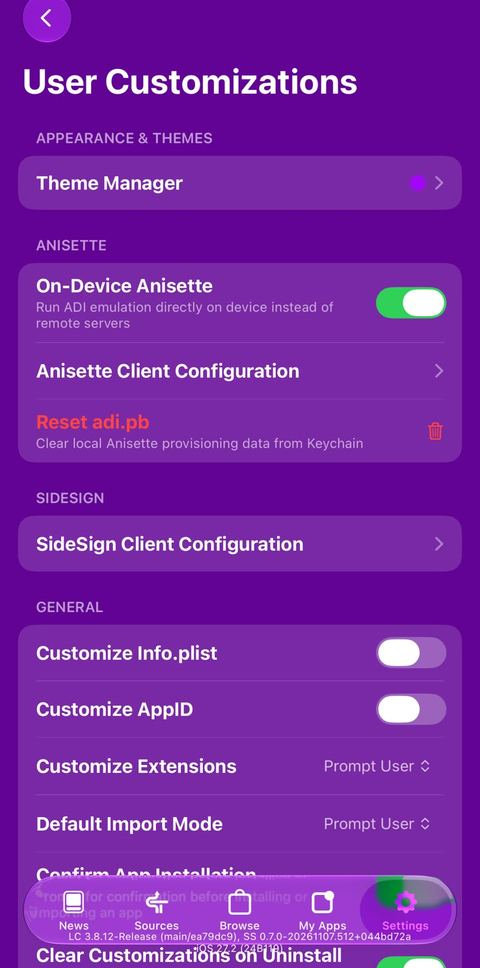
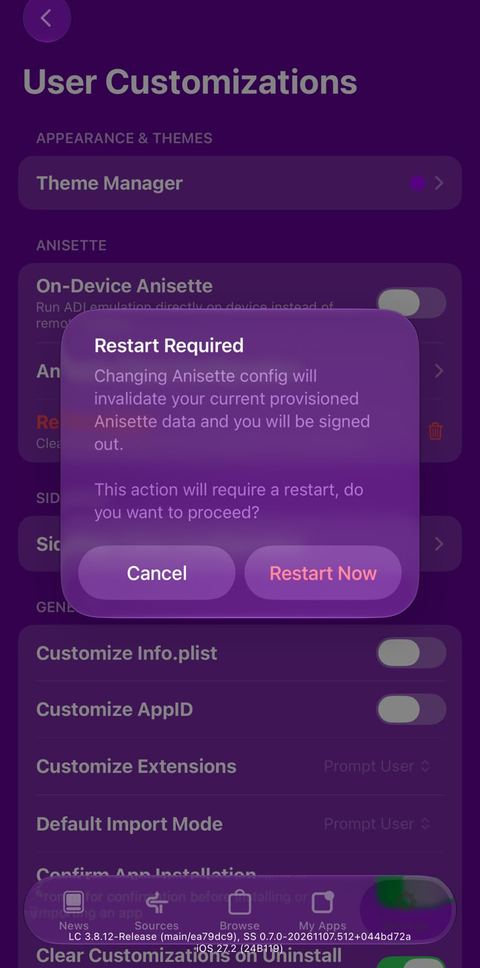
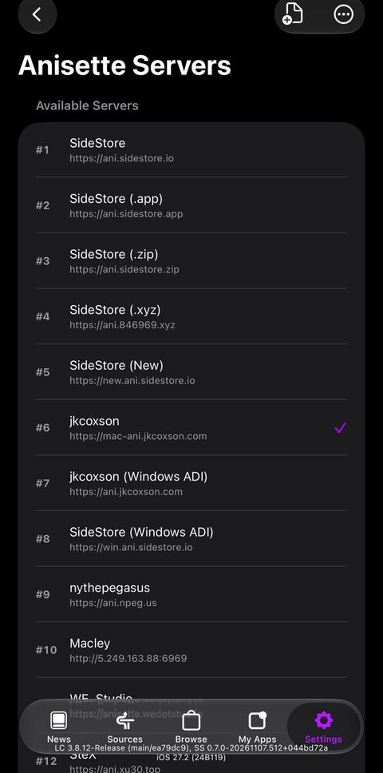
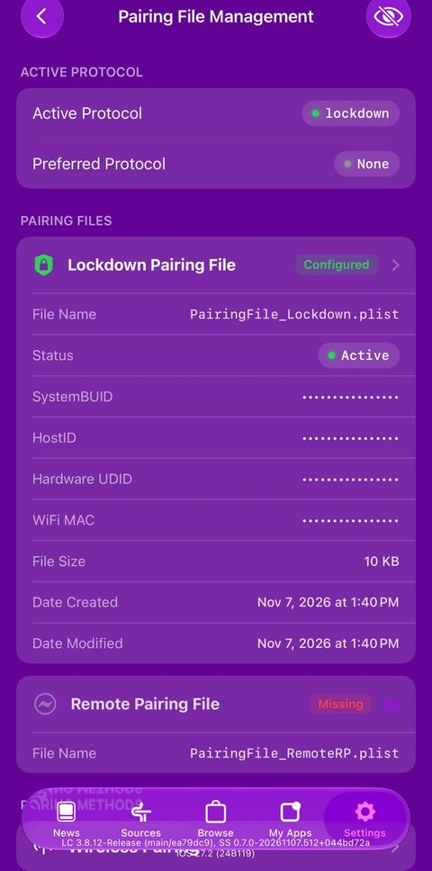

Guía paso a paso · iPhone y iPad
Instala AniBridge en tu iPhone o iPad
Aunque nunca hayas instalado una app fuera de la App Store. Usaremos SideStore: una app gratuita que instala AniBridge con tu propio Apple ID y la mantiene funcionando. Unos 30 minutos, una sola vez.
Lo que necesitas
- iPhone o iPad con iOS 15 o posteriorCon código de desbloqueo activado.
- Una computadora con Windows o MacSólo para la primera instalación (y si algún día actualizas iOS).
- El cable de tu iPhone o iPadQue sirva para datos, no sólo para cargar.
- Tu Apple ID y su contraseñaCon verificación en dos pasos por código (la normal). Las llaves de seguridad físicas no funcionan.
- Wi‑FiLos datos móviles no sirven para instalar ni renovar.
- El código QR de tu servidorTe lo da quien administra tu servidor de AniBridge.
Cómo funciona, en un minuto
Las apps instaladas así duran 7 días. SideStore las renueva antes de que caduquen; en la parte 5 lo dejamos automático. Con un Apple ID gratuito puedes tener hasta 3 apps así a la vez (SideStore cuenta como una).
- 1Prepara la computadora
iloader · 5 minComputadora - 2Instala SideStore en tu iPhone
con el cable · 5 minComputadora - 3Activa SideStore
confiar, Modo desarrollador, VPN · 10 miniPhone - 4Instala y configura AniBridge
5 miniPhone - 5Renovación automática
un atajo · 5 miniPhone
Prepara la computadora
Sólo necesitas una herramienta: iloader, el instalador oficial que recomienda SideStore.
Si tienes Windows
- Instala iTunes de AppleDescárgalo desde la página de Apple (no desde la Microsoft Store): así Windows reconoce tu iPhone.
iTunes para Windows - Instala iloaderEn su página descarga el instalador para Windows (el archivo .msi) y ábrelo.
Descargar iloader
Si tienes Mac
- Instala iloaderDescarga el archivo .dmg, ábrelo y arrastra iloader a Aplicaciones. No hace falta nada más.
Descargar iloader
Descarga iloader sólo desde iloader.app. Le darás tu Apple ID; no uses copias de otras páginas.
Instala SideStore en tu iPhone
- Conecta el iPhone con el cable y desbloquéaloSi en el iPhone aparece ¿Confiar en esta computadora?, toca Confiar y escribe tu código.
- Abre iloader e inicia sesiónEn Account (Cuenta) toca Add Account +, escribe tu Apple ID y contraseña y toca Login. Si Apple te manda un código de verificación, escríbelo.
- Elige tu iPhoneEn Devices (Dispositivos) selecciónalo. Si no aparece, desbloquéalo, prueba otro puerto USB y toca Refresh Devices.
- Instala SideStoreEn Installers (Instaladores) toca SideStore (Stable). iloader descarga, firma e instala SideStore y coloca el archivo de emparejamiento él solo. Espera sin desconectar el cable.
Listo cuando iloader muestre SideStore Installed!. El icono de SideStore ya está en tu iPhone, pero todavía no abre: eso lo resolvemos en la parte 3.
Elige siempre SideStore (Stable). Las opciones Nightly son versiones de prueba, y LiveContainer + SideStore es otro método que no usaremos en esta guía.
Activa SideStore
A. Confía en tu Apple ID
- Abre Configuración → General → VPN y administración de dispositivosEn algunos países se llama Admón. de dispositivos y VPN.
- Toca tu Apple IDEstá bajo App de desarrollador. Aparece tu correo, no el nombre de SideStore: es normal, porque la app está firmada con tu cuenta.
- Toca ConfiarEn iOS 18 o posterior verás Permitir y reiniciar: tócalo y escribe tu código.
B. Activa el Modo desarrollador
- Abre Configuración → Privacidad y seguridad
- Baja hasta el final y toca Modo desarrollador
- Actívalo y toca ReiniciarAl encender, confirma con Activar y tu código.

No hace nada raro: sólo permite abrir apps que tú mismo instalaste. Si no aparece la opción, reinicia el iPhone una vez y vuelve a mirar.
C. Instala LocalDevVPN
Es una «VPN» que no envía nada a internet: sólo deja que SideStore hable con el propio iPhone para instalar y renovar apps.
- Instálala desde la App StoreLocalDevVPN en la App Store
- Ábrela y toca ConnectiOS te pedirá permiso para agregar una configuración de VPN: toca Permitir y escribe tu código.
Regla de oro: LocalDevVPN conectada y Wi‑Fi cada vez que SideStore instale, actualice o renueve algo. Verás el icono VPN arriba en la pantalla.
D. Abre SideStore e inicia sesión
- Abre SideStoreCon LocalDevVPN conectada.
- Inicia sesión con el mismo Apple IDEl que usaste en iloader. Ojo con las mayúsculas: se escriben igual que en tu cuenta.
- Renueva SideStore una vezVe a la pestaña My Apps y toca el botón 7 DAYS junto a SideStore. Si pregunta por el certificado, toca Yes o Refresh Now.

Listo cuando en My Apps SideStore muestra el contador de 7 días sin errores. Si al iniciar sesión sale un error, mira Si algo sale mal.
Instala y configura AniBridge
A. Instala AniBridge
- Con LocalDevVPN conectada, abre esta página en Safari en tu iPhoney toca el botón: SideStore se abre y agrega la fuente de AniBridge.
Agregar AniBridge a SideStore - Confirma en SideStoreToca Add Source (agregar fuente) si lo pregunta.
- InstalaEn Browse o dentro de la fuente, busca AniBridge Player y toca el botón de instalar. Espera a que termine.
¿El botón no hace nada? En SideStore ve a Sources, toca + y pega esta dirección:
source.json
B. Configura AniBridge
- Abre AniBridge desde la pantalla de inicioAparece el Asistente de configuración inicial. Toca Empezar.
- Toca Escanear código de configuración y apunta al QR de tu servidorSi el QR está en este mismo iPhone (una captura o una foto), toca Elegir imagen de Fotos.
- Elige cómo identificarte Ya tengo una cuenta (por ejemplo, la usas en otro teléfono o en la TV): escanea el código del perfil que muestra ese dispositivo (en el teléfono: Ajustes › botón del código QR; en la TV: mantén OK sobre tu perfil › Llevar al teléfono). No tengo cuenta: la app crea una nueva con el código del servidor y te muestra su token. Guárdalo (por ejemplo en tus Notas o en un gestor de contraseñas): es la llave para recuperar tu cuenta.
- Pon tu nombre y una foto o avatarEs lo que verán tus otros dispositivos y tus TVs.
- Avisos de episodios nuevosToca Activar avisos si quieres que te avise cuando salga un episodio de lo que estás viendo, y luego Empezar a ver.
El QR del servidor y tu token son como contraseñas: no los publiques ni los compartas en grupos.
Listo cuando ves la pestaña Recientes con las series. Las versiones nuevas de AniBridge aparecen en SideStore, en My Apps, como UPDATE; la app también te avisa.
Renovación automática
Cada 7 días hay que renovar las apps. En lugar de acordarte, creamos un atajo que lo hace solo todos los días. Antes, comprueba que funciona a mano: con LocalDevVPN conectada, en SideStore → My Apps toca Refresh All.
Novedad de iOS 27: ya no existe la pestaña Automatización aparte. Ahora la programación se pone dentro de cada atajo, desde Editar.
A. Atajo «Renovar apps»
- Abre la app Atajos y toca +Ponle de nombre Renovar apps.
- Agrega estas tres acciones, en este ordenUsa el buscador de acciones:
- 1LocalDevVPN → EnableBusca «LocalDevVPN». Enciende la VPN.
- 2Esperar → 5 segundosBusca «Esperar». Le da tiempo a la VPN de conectarse.
- 3Refresh All Apps (de SideStore)Busca «SideStore». Renueva todas tus apps.
- Pruébalo una vezToca ▶︎. iOS te pedirá permiso para cada acción la primera vez: elige Permitir siempre.
B. Prográmalo para todos los días
- En el atajo, toca Editar → Automatización(Automation si tu iPhone está en inglés).
- Elige Hora del díay pon una hora en la que sueles estar usando el iPhone, por ejemplo 1:00 p. m., repitiendo todos los días.
- Que no pregunte antes de ejecutarseToca Editar → el botón ⓘ (Información) → Privacidad y activa Permitir ejecución con el dispositivo bloqueado (Allow Running When Locked).
Por qué a una hora en la que usas el iPhone: iOS 27 sólo deja renovar si el iPhone se desbloqueó hace poco. A las 3 de la mañana, con el teléfono bloqueado toda la noche, falla.
C. Atajo «Apagar VPN»
- Crea otro atajo con una sola acciónLocalDevVPN → Disable.
- Prográmalo igual, 5 minutos despuésEditar → Automatización → Hora del día (por ejemplo 1:05 p. m., todos los días) y activa también Permitir ejecución con el dispositivo bloqueado.
Al día siguiente abre SideStore → My Apps: los contadores deben volver a 7 días. Aun así, entra una vez por semana a comprobarlo; si algo falló, toca Refresh All a mano (con LocalDevVPN conectada).
Atajos a veces muestra «No se pudo ejecutar Refresh All Apps» aunque la renovación sí se hizo. Fíate de los contadores de My Apps.
¡Listo!
AniBridge está instalada, conectada a tu servidor y se renueva sola. La computadora ya no hace falta, salvo si actualizas iOS (ver abajo).
Si algo sale mal
SideStore no abre (se cierra o dice que no es de confianza)
Repasa la parte 3: A (confiar en tu Apple ID) y B (Modo desarrollador). Las dos son necesarias.
SideStore dice «Setup Incomplete» o «Pairing File Not Configured»
Falta el archivo de emparejamiento. Vuelve a la computadora:
- Conecta el iPhone y abre iloader
- Toca Manage Pairing File
- Toca Place junto a SideStoreDebe decir Pairing file placed successfully!

Error al iniciar sesión en SideStore (por ejemplo «-80045»)
Es un fallo conocido de estas semanas con el inicio de sesión de Apple. La solución que funciona es usar un servidor de Anisette en lugar del del iPhone:
- SideStore → Settings → User Customizations
- Apaga On-Device Anisettey toca Restart Now cuando lo pida.
- Vuelve a Settings → Anisette Serversy elige jkcoxson (el número de la lista puede cambiar).
- Inicia sesión de nuevo



iloader no ve mi iPhone (Windows)
- Desbloquea el iPhone y prueba otro cable o puerto USB
- Comprueba que iTunes es el de la página de AppleSi sigue sin verlo: desinstala iTunes y «Apple Mobile Device Support», e instala la app Dispositivos Apple (Apple Devices) desde la Microsoft Store.
Actualicé iOS y SideStore ya no renueva
Al actualizar o restaurar iOS, el archivo de emparejamiento puede dejar de valer. En la computadora, con iloader:
- Toca Delete Stored Pairing
- Selecciona tu iPhoney toca Confiar en el teléfono.
- Manage Pairing File → Place junto a SideStore

Dice que llegué al límite de apps
Con un Apple ID gratuito puedes tener 3 apps instaladas así a la vez (SideStore cuenta como una, AniBridge como otra) y registrar 10 apps nuevas por semana. Borra de SideStore las que no uses, o espera unos días.
AniBridge no abre y dice que caducó
Pasaron más de 7 días sin renovar. Conecta LocalDevVPN, abre SideStore → My Apps → Refresh All. Si SideStore también caducó, vuelve a instalarlo con iloader (parte 2): tus datos de AniBridge se conservan.